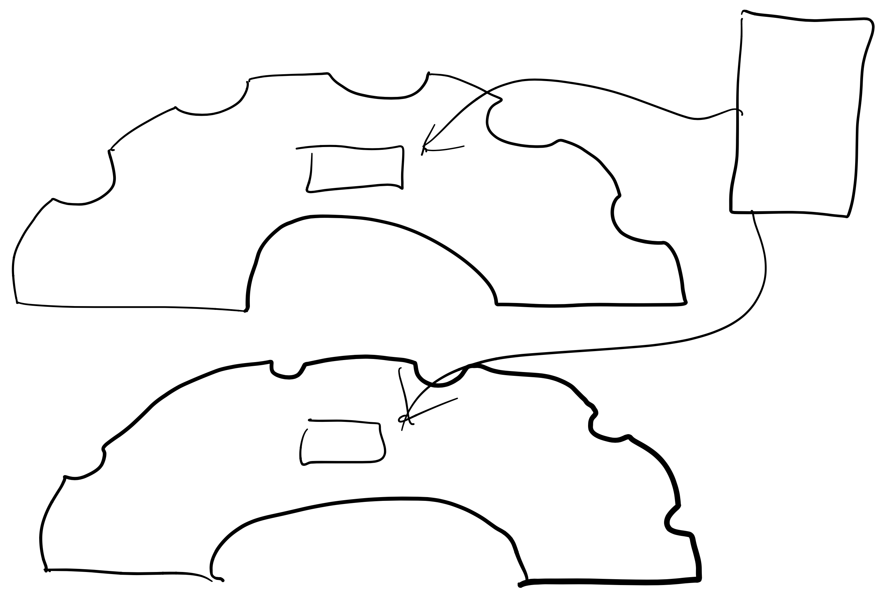
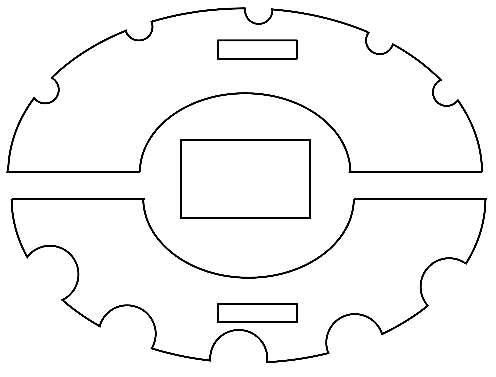
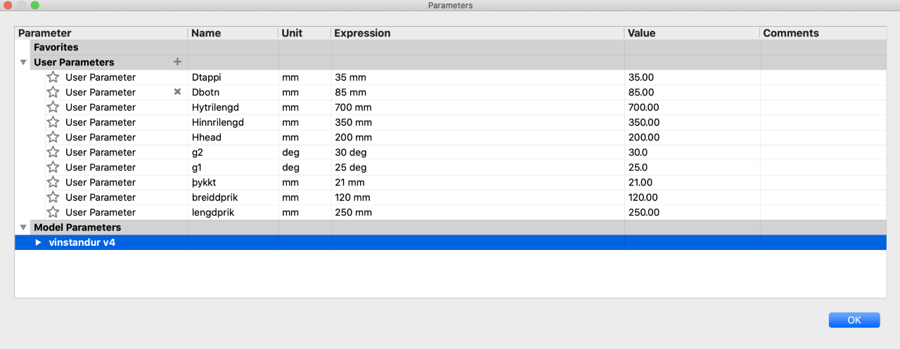
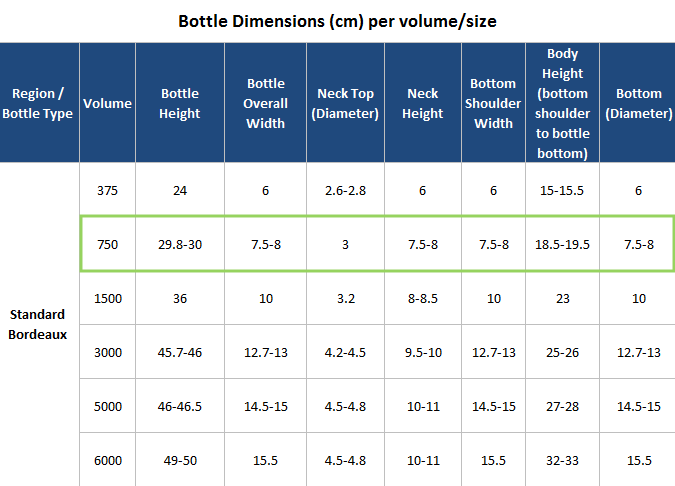
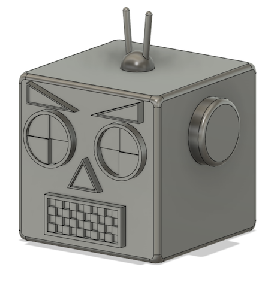
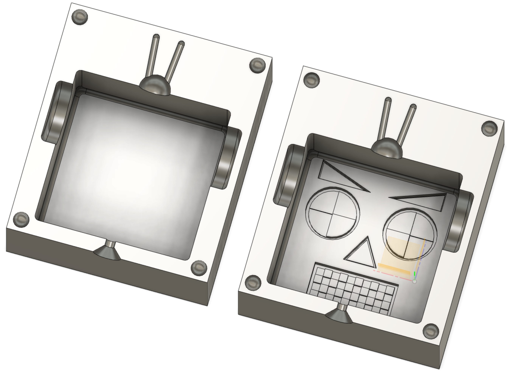

Lokaverkefni
Hópurinn
Þessi frábæri hópur samanstendur af Atla Frey Hallbjörnssyni, Jóni Lárusi Egilssyni (Vinnuframlag að verkefni 4 og vinnuframlag að verkefni 5 og vinnuframlag að verkefni 6) og Sólveigu Björnsdóttur (Vinnuframlag að verkefni 4 og vinnuframlag að verkefni 5) Við erum öll í vélaverkfræði og ákváðum við annars vegar að fræsa vínstand í verkefni 4 og hins vegar að undirbúa mót utan um vélmennahaus í verkefni 5. Við skjalfestum hópaverkefnið með þessum frábæru myndböndum en fyrir neðan það má lesa ítarlegar um verkefnin:
Auk þess að horfa á þetta myndband má sækja hér einblöðung sem sýnir ferli verkefnisins og hönnunarvernd verkefnisins en ákveðið var að hafa það á MIT formi.
Verkefni 4 — Að fræsa eitthvað stórt
Verkefnalýsing
Þetta hópverkefni snerist um að hanna, teikna, undirbúa og að fræsa eitthvað stórt. Hópurinn leitaði innblásturs á netinu og að lokum var ákveðið að hanna vínstand mjög svipuðum þeim sem má sjá á þessari síðu. Fyrst var sketchað upp mjög rough draft af vínstandinum:

Eftir það var gert aðeins meira clean sketch og leit það svona út:

Í kjölfarið á þessum skissum fluttist hópurinn yfir í Fusion 360 og byrjaði Jón Lárus að teikna þetta upp þar. Ákveðið var að hafa standinn sem feril sem var nánast hálfhringur, þ.e.a.s. einhvers konar sporbaug, þar sem langásinn á hringnum er þvermálið og skammásinn er hæðin. Parametrar voru stilltir eftir smá trial and error þar sem við vildum finna rétta hæð á standinum þannig að flöskurnar myndu haldast fastar í standinum án þess að renna úr honum. Eftir að hafa teiknað sporbauginn var annar minni teiknaður og settur inn í miðjuna og trimmað út allt þannig að standurinn væri eins og regnbogi í laginu. Parametrarnir voru valdir svona: 
Skipanirnar Copy og Paste voru svo notaðar til þess að gera nákvæmlega eins regnbogaform. Eftir það voru fimm hringir settir á efri sporbauginn og skorið út svo pláss væri fyrir hálsradíus flöskunnar annars vegar og hins vegar fyrir botnradíus flöskunnar, en tölurnar fyrir 750mL vínflöskur sem voru notaðar má sjá á þessari töflu: 
Eftir að hafa teiknað upp þessa tvo "regnboga" með mismunandi stórum hálfhringum skorna út úr hverjum voru skorin út pláss fyrir lítinn rétthyrning sem myndi þá festa hvorn regnboga saman. Vínstandurinn leit að lokum svona út í Fusion:

Til þess að fræsa vínstandinn út þurfti að fylgja nokkrum skrefum. Byrjað var á því að fletja hlutinn út í Fusion 360 og útflatningurinn vistaður sem DXF skjal. Í kjölfarið var skjalið flutt yfir í VCarve, sem bæði má nálgast í tölvubúnaðinum í Fablab, en inni á flr.is er einnig hægt sækja kóða til þess að ná í forritið á eigin tölvu. Inni í VCarve var unnið með 1500 x 1500 mm svæði, svo var efnisþykktin 21 mm notuð í þessu verkefni. Til þess að færa DXF skrána inn í VCarve var smellt á Import vectors, undir File opreations, og síðan var viðeigandi skrá valin. Öllum vectorunum var raðað snyrtilega upp inni á vinnusvæðinu svo að þeir passi og skarist ekki á. Passa þurfti að nota Fillet skipunina til þess að lagfæra hvöss horn. Ef það reynist erfitt að lagfæra hvössu hornin þá gæti þurft að velja þær línur mynda hornið, hægrismella, og smella á Join vectors. Þá ætti að vera hægt að nota Fillet skipunina án vandræða.
Næst átti að stilla Drilling toolpath:
Cut depth: 1 mm
6 mm biti undir Metric tools
Speed: 10500 RPM
Unit: mm/min
Feed: rate 70 mm/sek
Plunge rate: 50 mm/sek
Markmiðið er að Chip Load sé um 0,2 mm - 0,02 mm, en miðað við ofangreindar stillingar er gildið okkar 0,2 mm sem er einmitt innan þessara marka.
Næst voru allir hlutirnir valdir inni í 2D view og til hægri, undir Toolpath, var Profile Toolpath valið fyrir fræsinguna og:
Cut depth: 21.3 mm (gert aðeins meira en efnisþykktin til að þetta fari örugglega í gegn)
Machine vectors: Outside/right
Að lokum voru svo 4-5 tabs komið fyrir á hvern hlut. Undir Preview toolpaths var svo hægt að sjá hvernig hluturinn lítur út. Svo er hluturinn færður yfir í fræsivélina með USB lykli.
Þegar komið var í fræsivélina var ágætis byrjun að bora plötuna á sinn stað með nokkrum skrúfum, áður en núllpunktur var valinn vel og vandlega. Þegar búið var að passa upp á allar stillingar og gera grein fyrir öryggisatriðum, var ekkert eftir nema að ýta á Start. Þá var setið yfir fræsivélinni á meðan hún skar hlutina út.
Þegar skurðinum var lokið voru tabarnir svo brotnir og reynt var að festa bitana saman. Þar sem að teikningin gerði ráð fyrir engu bili milli hluta pössuðu þeir ekki strax saman. Þeir voru þá pússaðir aðeins niður með þjöl og snyrtir til, síðan var þeim öllum smellt saman og lokaútkoman var þá tilbúin, en ferlið í réttri röð má sjá á slideshowinu hér fyrir neðan. Fyrir áhugsama má svo sjá betur hvernig toolpath er gert í þessu myndbandi.
Hönnunarskjöl
Hér má sækja hönnuarskjöl verkefnisins.
Verkefni 5 — Að (fræsa) og undirbúa mót
Verkefnalýsing
Þetta verkefni snerist um að hanna, teikna, undirbúa og fræsa mót í annaðhvort frauðplast eða vax. Þá átti einnig að undirbúa toolpaths, bæði roughing og finishing. Vegna heimsfaraldurs var tímalínu verkefnanna raskað og því var ekki hægt að klára verklega hlutann í Fablab. Samt sem áður var verkefnið hannað og teiknað.  
Í stað þess að leita innblásturs fylgdum við hjartanu og teiknaði Atli haus á vélmenni. Upphaflega átti teikningin að vera hús en þegar gluggarnir voru komnir litu þeir svo mikið út fyrir að vera augu að ný hugmynd kviknaði. Við upprunalega kassann bættust svo augu, eyru, nef, munnur og lítið loftnet eins og má sjá á þessari mynd:
Þegar vélmennið hafði verið snyrt frekar var næst skapaður kassi í kringum hausinn og því næst hausinn combineaður við þennan kassa til að skapa mót. Eftir þetta var skorin lína í gegnum miðju kassans og þá voru komnir tveir helmingar af mótinu, einn helmingur var andlitið á Vélmenninu og hinn helmingurinn var bakið á hausnum. Eftir það voru settar kúlur í hvert horn á bak mótinu og svo aftur combineað fremra mótið til þess að fá holur sem gætu fest saman mótin. Farið var eftir þessu myndbandi til að gera þetta mót. Mótið leit svona út:
Eftir þetta var gert í rauninni sama process fyrir utan kúlurnar til þess að gera mót af mótinu samkvæmt þessu myndbandi. Þá leit mótið af mótinu svona út:
Næsta mál var að byggja toolpath eins og í verkefni 4 en þá var farið eftir fleiri YouTube myndböndum og var þetta myndband hjálplegast. Fyrst var gert 3D Adaptive Clearing með 3 mm flat end mill til þess að fjarlæga mikið efni í einu og svo tvisvar var gert 3D Parallel Pass til þess að gera vélmennishausinn fínni.
 Samtals tími sem átti að taka að fræsa þennan hlut var 08:23:25, en ef við hefðum farið í Fablab og fræst hlutinn hefðum við líklega ákveðið að nota annan bita í simulationinu og notað rétt gildi fyrir allt þannig að tíminn væri líklega minni.
Samtals tími sem átti að taka að fræsa þennan hlut var 08:23:25, en ef við hefðum farið í Fablab og fræst hlutinn hefðum við líklega ákveðið að nota annan bita í simulationinu og notað rétt gildi fyrir allt þannig að tíminn væri líklega minni.
Hönnunarskjöl
Vinnuframlag
Talsverður tími fór í að klára þetta verkefni en tímaskráningin er eins og stendur:
2 tímar í að gera kynningu
8 tímar að setja upp vefsíðuna og klára alveg verkefnið
Samtals: 10 tímar